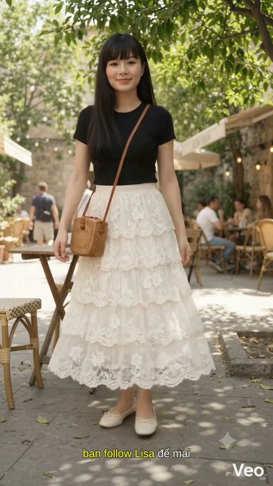
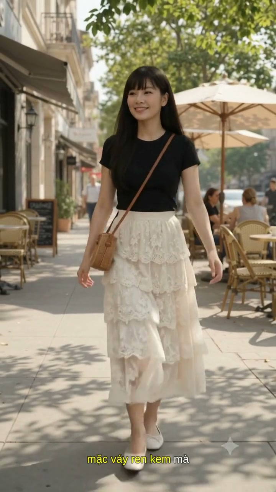
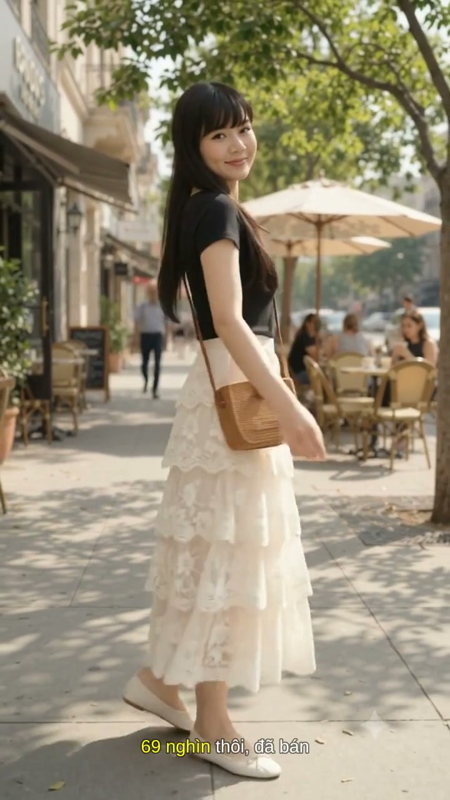
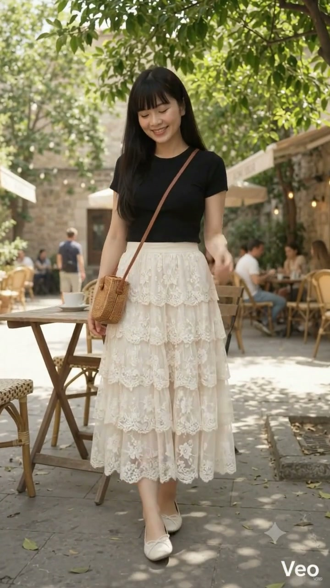

Váy ren kem dáng dài đi cà phê cuối tuần: gọn mà vẫn sang

Đi cà phê cuối tuần, Lisa mặc váy ren hoa dáng dài màu kem với áo ôm đen. Tầng ren bồng bềnh mà không sến chút nào — nhìn vẫn gọn, vẫn sang. Bạn chấm bộ này mấy điểm?
Đọc trước khi mua: bài viết này là gợi ý phối đồ lấy cảm hứng từ các mẫu đang bán chạy trên Shopee. Lisa là nhân vật AI, nên bài viết không phải bài đánh giá sản phẩm Lisa đã mặc thật hay đã dùng thử. Giá, chất liệu và size cần kiểm tra lại trên trang bán trước khi mua. Link mua hàng (affiliate — mua qua link, Lisa Style có thể nhận một khoản hoa hồng nhỏ mà giá bạn trả không đổi):
· Chân váy ren hoa dáng dài Hàn Quốc, 2 lớp, ren mềm mịn — màu kem, dài 92cm, 69.000đ sau voucher (niêm yết 89.000đ), 4,9 sao/168 đánh giá, đã bán 1k+. Size S dưới 50kg, M 51–59kg, L 60–65kg.
Một set đi cà phê cuối tuần đơn giản mà đủ điểm nhấn — váy là nhân vật chính, còn lại đều làm nền cho váy:

Đi bộ về phía camera — váy ren kem bồng bềnh theo bước chân

Xoay nhẹ khoe các tầng ren — chân vẫn chạm đất, dáng vững

Cười nhìn camera — set này hợp đi café, chụp ảnh
Vì sao set này hợp đi cà phê cuối tuần?
Váy ren kem dáng dài: ren hoa nhiều tầng bèo xếp ly, cạp cao, dài 92cm — vừa chạm mắt cá chân. Ren mềm mịn, 2 lớp nên không lộ, mặc ngoài trời nắng vẫn thoáng. Màu kem lên ảnh ngoài trời rất sáng da.
Áo ôm đen làm nền: áo ôm đen tay ngắn, cổ tròn — đơn giản, ôm dáng, làm nổi bật váy ren kem. Đen + kem là combo an toàn, không bao giờ lỗi mốt.
Túi cói + giày búp bê trắng: túi cói đeo chéo quai da nâu nhỏ xinh, giày búp bê trắng mũi tròn có nơ — đi café cả buổi không đau chân, túi đủ đựng điện thoại và son.
Cách chọn váy ren cho dáng nhỏ
Cạp cao kéo chân dài: váy cạp cao ôm eo, phần ren xòe từ eo xuống — eo thon lại, chân nhìn dài ra; dáng nhỏ (dưới 1m55) mặc váy dài 92cm vẫn vừa, không bị nuốt người.
Tầng ren bèo che khuyết điểm: nhiều tầng ren bèo xếp ly che đùi, che bụng — dáng nhỏ mặc vào vẫn thấy eo thon, chân dài, không cần nịt bụng hay chỉnh dáng.
Màu kem sáng da, lên ảnh đẹp: màu kem đi café ngoài trời nắng đẹp, da sáng lên; chụp ảnh là chính thì màu kem luôn là lựa chọn an toàn hơn màu tối.
Ren hoa không sến nếu phối đơn giản: váy ren đã đủ cầu kỳ rồi thì áo, túi, giày nên đơn giản — áo ôm đen trơn, túi cói nhỏ, giày búp bê trắng là đủ; thêm phụ kiện rườm rà sẽ rối.
Mẹo phối set này trong 3 phút
Đi café, chụp ảnh: mặc đúng set này — váy ren kem + áo ôm đen + túi cói + giày búp bê trắng, thêm một chiếc kính râm là đủ.
Đi dạo phố, mua sắm: giữ nguyên set, đổi túi cói sang túi tote vải là đi cả ngày thoải mái.
Đi ăn tối cuối tuần: thay giày búp bê bằng giày cao gót quai mảnh màu nude, thêm khuyên tai nhỏ — set ren kem lên đèn vàng rất sang.